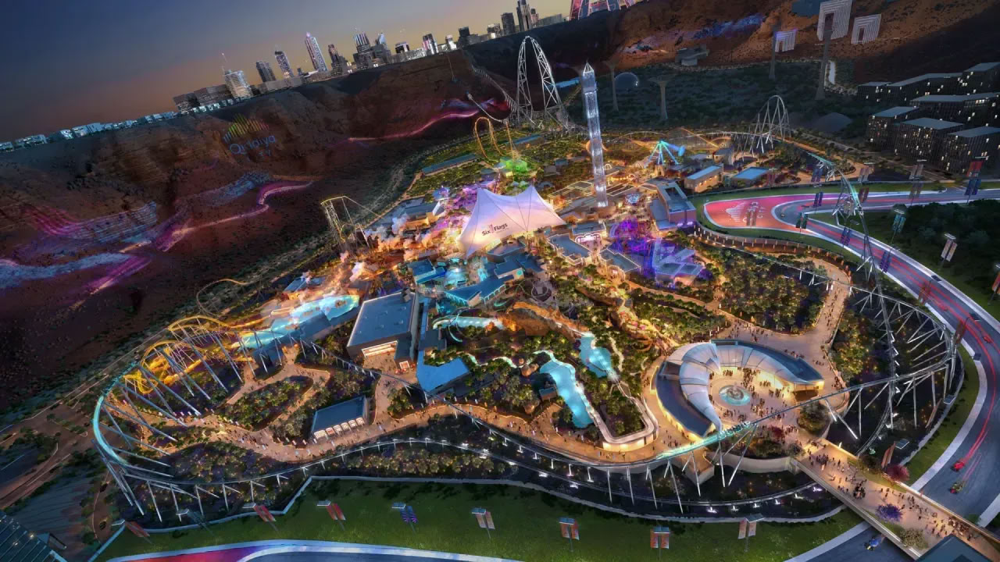
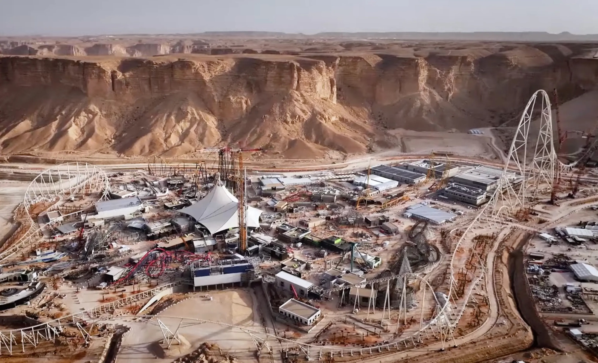
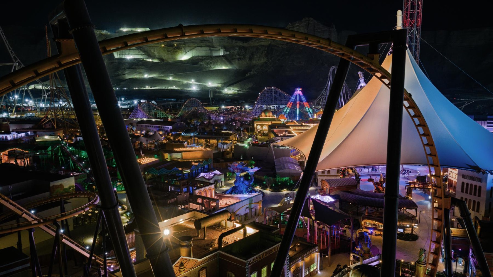
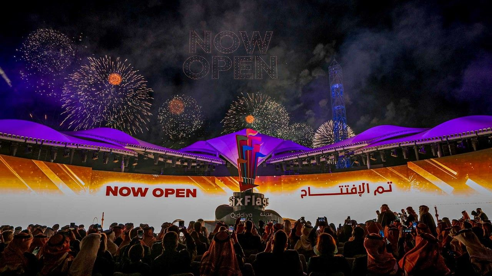

The park existed.
Its guests didn't.
How the guest app for the first Six Flags outside North America was built for a park that had never run a single day, for guests nobody could meet, against a gate-open date the whole world knew.
 Qiddiya Investment Company · Riyadh
Qiddiya Investment Company · RiyadhFor almost the entire time I worked on it, I was not allowed to see the park. It was real by then: forty minutes outside Riyadh, six themed lands and the tallest, fastest and longest roller coaster ever built stood against a cliff face, the flagship of Qiddiya, the 360 square kilometre entertainment city at the centre of Saudi Arabia's Vision 2030. But the site was sealed for physical commissioning. The only people through the gates were the ride engineers and safety testers, stress-testing coasters that ran, over and over, with nobody in the seats. No queue had ever formed, no family had ever crossed the park in the noon heat, and no guest had ever asked it a question. I worked on the guest's day from three thousand kilometres away, through plans, models and the pictures you are about to scroll through.
My job was the phone in the guest's hand. Tickets, the live map, the beacons in the ground, ride booking, the AI concierge: the entire day as a guest would carry it, for the first Six Flags ever built outside North America. And over all of it, one constraint that outranked every other: the gates would open on December 31, 2025, ready or not.
A product normally meets its users long before the day that matters, through betas, soft launches and quiet first weeks. This one would meet its first real guest and its finished park on the same morning.
01Three guests, written hour by hour
The park had no guests to observe and there was no comparable product in the country to learn from. So I did what I do best when the answers aren't in any document: I went and found ground truth somewhere else. I downloaded every park app on both stores, the Disney and Universal giants down to the smallest regional water park, and lived in them until I knew exactly where each one made a day easier and where it quietly gave up on its guest. Then I got on planes. I walked theme parks across European cities with my phone out and a notebook: timing entry queues, watching where families stopped dead in the middle of a path, waiting to see what people actually did the moment a ride went down. (Not one ride failed on any of my visits, which somehow only added to the pressure.)
The park I was designing for had never held a crowd. But other parks held one every day, and guests are guests everywhere: heat, hunger, tired children, dropped connections and changed plans are universal. The patterns I carried home became the standard every drawing had to be checked against. With that in the notebook, we wrote complete days, hour by hour, for the guests we knew were coming, and every feature had to earn a minute inside one of those days before it earned a place on the plan.
Three days, written down
The first-time family
Two kids, a stroller, forty degrees by noon. They will not learn an app today. Their day needs every ticket on one parent's phone, shade and short waits found for them, and a plan that survives a meltdown at two in the afternoon.
The coaster hunter
Flew in for one ride. Falcons Flight drops 195 metres off a cliff edge and reaches 250 kilometres per hour, and this guest has been watching construction videos of it for two years. Their day is a single booked slot, the best hour to ride it, and absolute certainty that the booking holds.
The evening local
Riyadh is forty minutes away. Comes after work with four hours, not fourteen. Their day is a realistic short plan, live waits that make the drive worth it, and an exit that doesn't feel like giving up.
Three days, written down, became the test every roadmap argument had to pass. It is much harder to fight about feature priority when the question is which minute of whose day it serves.
02What we had instead of a park
Products like this are normally designed from observation. You walk the space, time the queues, watch where people get lost and where they linger. We had a park nobody could observe: 320,000 square metres standing ready behind closed gates, with no crowd to watch, no queue to time, and late construction still moving pieces of it week by week.


Those pictures are the park's whole life before opening day: a promise, a construction site, a headline ride waiting for its first rider. An operating park appears in none of them, and that absence is what it did to the inputs.
Losing your inputs does not excuse you from deciding. It changes what a decision has to look like. The park's physical facts were solid; its operational ones did not exist. Every behavioural number we ran on, queue times, crowd flow, demand, dwell, was a model with a date attached, so the product was built to survive its own models: everything physical lived as server-side data rather than code. Names, positions, thresholds, hours, whole rides. When a late construction change moved an entrance or a model missed reality, the correction was a data edit that reached every phone in minutes, not an app release that took weeks.
The way the work was set upWe couldn't observe the place or the people. So we designed the day instead, and made every assumption cheap to change.
03The day is the spec
We didn't run the roadmap as a feature list. We ran it as a timeline of one guest's day, from the sofa to the last ride, and shipped in the order the day happens. Scroll through the family's opening day. The drawings follow, exactly as they were sketched: on paper, before the park had ever run a day.
The day starts on the sofa
Three day tickets bought in two taps, all living on one parent's phone, next to the annual passes and VIP options the park sells to very different guests. Prices, park hours and the plan in one place before the drive starts.
Entry assumes nothing
The pass is ready before they park: brightness up, code on screen, gate number shown. It works with no signal at all.
The map answers "where first?"
The map opens centred on the family, not on the park. The six lands sort by walk time from where they stand, live waits beside each, with the 70 minute queue for Falcons Flight visible from the start.
One question instead of forty screens
Nobody browses menus holding a melting child. The concierge takes the actual question and does the navigating: shade, water rides, short waits, and the booking moved before anyone asked twice.
Plans change. Bookings follow.
The afternoon slot moves back an hour in one tap, no penalty and no queue at guest services. The evening slot they came for stays held.
The ride they came for
The reminder fires because they are close, not just because it is time. Six minutes later the family is on a coaster doing 250 kilometres per hour, in the dark.
04Forty-seven days, in public
There was no soft launch and no beta cohort, because a park has no quiet way to open: the first day the gates work is the first day the crowds arrive. The sequence below is public record, and it is the whole risk profile of this product in three dates.
05The park, real at last
The park the app met that morning was real at last: 28 rides across six themed lands radiating from the central Citadel, and three world records claimed by a single coaster. From that day, every modelled number started being replaced by an observed one, through the same server-side dials that were built for exactly this moment.



06What the sand taught
Strip away the desert and the records, and this was a product problem most teams will eventually meet: shipping into a reality you cannot observe yet, on a date you do not control. What survived contact with opening day was not any single feature. It was the way the work was set up.
The guest's written day settled arguments that job titles couldn't, and kept five systems pointed at one experience. Guesses were treated as inventory: labelled, priced, and kept cheap to change in production, so being wrong was a Tuesday, not a crisis. The failure states were designed before the happy paths were finished, because opening day is exactly when rides go down and networks fall over. And the date held, in public, because everything above existed to protect it.
Park photography and renders are the property of Qiddiya Investment Company and Six Flags Qiddiya City, shown editorially to illustrate work I contributed to. Opening-day photo: author's own. Figures from public reporting.